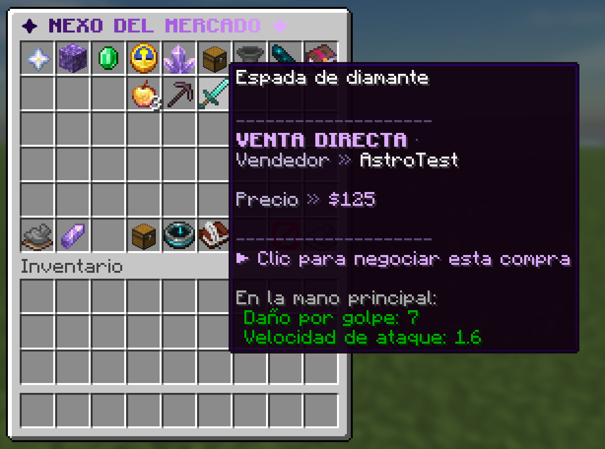

Chatalyst cubre el comercio entre jugadores de tres formas:
- Mercado (
/market): los jugadores ponen objetos a la venta o en subasta. El objeto queda en depósito al momento, la oferta se anuncia en el canal de comercio con botones de comprar y pujar, y las ventas se negocian en una ventana donde el comprador puede ofrecer dinero, objetos o las dos cosas. - Intercambio directo (
/trade): dos jugadores abren una ventana compartida, ponen objetos y dinero, y nada se mueve hasta que los dos confirman. - Anuncios de tiendas externas: si usas AuctionHouse, QuickShop o un plugin parecido, Chatalyst anuncia sus ofertas en los canales de comercio y subastas.

El mercado y el intercambio directo vienen apagados. El dinero necesita Vault y un plugin de economía.
Cómo se activa
En plugins/Chatalyst/economy.yml, pon Market.Enabled: true y/o Trade.Enabled: true y ejecuta /cht reload. Enciende también los canales trade y auction si quieres que los anuncios se vean (se encienden solos al detectar un plugin de mercado compatible).
Configuración
Mercado
Market:
Enabled: false
Defer_To_Plugins: true
# Canales que reciben los anuncios (solo local, nunca pasan por el proxy).
Sale_Channel: trade
Auction_Channel: auction
Max_Listings: 10 # ofertas activas por jugador (chatalyst.market.bypasslimit lo ignora)
Listing_Days: 7 # las ventas caducan tras estos días (el objeto vuelve al vendedor)
Max_Stash: 54
# Trueque: el comprador puede ofrecer objetos (en vez de dinero, o además) en la negociación.
Allow_Item_Offers: true
Auction:
Default_Minutes: 60 # duración cuando el vendedor no indica una
Max_Minutes: 1440 # límite máximo de duración de una subasta
Min_Increment_Percent: 5 # cada puja debe superar la anterior al menos en este %| Opción | Por defecto | Qué hace |
|---|---|---|
Enabled |
false |
Enciende el mercado integrado. |
Defer_To_Plugins |
true |
Se aparta si hay instalado un plugin de mercado dedicado; entonces Chatalyst solo anuncia las ofertas de ese plugin. |
Sale_Channel / Auction_Channel |
trade / auction |
Canales que reciben los anuncios. |
Max_Listings |
10 |
Ofertas activas por jugador. |
Listing_Days |
7 |
Días hasta que caduca una venta y el objeto vuelve al vendedor. |
Max_Stash |
54 |
Montones de objetos que pueden esperar en el alijo. Si se llena, se rechazan compras e intercambios nuevos hasta que el jugador recoja algo. |
Allow_Item_Offers |
true |
El comprador puede ofrecer objetos en lugar de dinero, o además del dinero. |
Auction.Default_Minutes |
60 |
Duración de la subasta si el vendedor no pone una. |
Auction.Max_Minutes |
1440 |
Duración máxima de una subasta. |
Auction.Min_Increment_Percent |
5 |
Cada puja tiene que superar la anterior al menos en este porcentaje. |
Highlight.Enabled |
false |
Colorea el nombre del producto de los vendedores con un permiso de resaltado. |
Sound.Enabled |
true |
Suena una campanilla a quien recibe los anuncios del mercado. |
Highlight.Ranks empareja un permiso con un color. Gana el primer permiso que tenga el vendedor:
Highlight:
Enabled: false
Ranks:
- Permission: chatalyst.market.highlight.mvp
Color: "<#C44FE0>"
- Permission: chatalyst.market.highlight.vip
Color: "<#D8B4FE>"Cómo funciona una venta
- El vendedor pone a la venta el objeto de la mano con
/market sell <precio>o/market auction <precio> [minutos], o varios a la vez con/market publish, que abre una ventana de publicación con controles exactos de precio, una descripción y un lanzamiento programado opcional. - El objeto sale del inventario del vendedor y espera en depósito. La oferta se anuncia con la descripción del objeto y los botones.
/market buy <id>abre una negociación con el vendedor conectado. El comprador puede ofrecer dinero, objetos o ambos. Cualquier cambio anula las dos confirmaciones; el trato solo se cierra cuando los dos aceptan la misma oferta.- Las subastas reciben pujas con
/market bid <id> <cantidad>. Al terminar, se cobra al ganador y recibe el objeto. Si el pago falla, el objeto vuelve al vendedor. - Lo que no cabe en un inventario, o es de un jugador desconectado, espera en
/market claim.
/market abre un buscador con todas las ofertas, las ventas directas, las subastas y las tuyas, ordenable por más recientes, precio o fin.
Intercambio directo
Trade:
Enabled: false
Allow_Money: true # permite añadir dinero a cada lado (necesita Vault); false = solo objetos
Request_Timeout_Seconds: 60| Opción | Por defecto | Qué hace |
|---|---|---|
Enabled |
false |
Enciende /trade. |
Allow_Money |
true |
Cada lado puede poner dinero. false = solo objetos (no hace falta Vault). |
Request_Timeout_Seconds |
60 |
Cuánto dura abierta una petición de intercambio. |
Los dos jugadores tienen que estar conectados en el mismo servidor. Cualquier cambio anula las dos confirmaciones. Si alguien se desconecta o cancela, cada objeto vuelve a su dueño. La entrega pasa por el alijo, así que un inventario lleno nunca tira objetos al suelo.
Plugins de tienda externos
Trade_Plugins:
Announce:
Enabled: true
Cooldown_Seconds: 60
# "<comando sin barra>": <canal que recibe el anuncio>
Commands:
ah sell: auction
auc sell: auction
auction sell: auction
auctionhouse sell: auction
crazyauctions sell: auction
qs create: trade
quickshop create: tradeCuando un jugador ejecuta uno de estos comandos, Chatalyst lo anuncia en el canal indicado, en el idioma de cada lector y con una espera por jugador. Entre los plugins detectados están AuctionHouse, zAuctionHouse, CrazyAuctions, PlayerAuctions, AuctionMaster, QuickShop, ChestShop, ShopGUI+, EconomyShopGUI, DynamicShop y BossShopPro.
Comandos y permisos
| Comando | Permiso (por defecto) | Qué hace |
|---|---|---|
/market (/mercado, /mkt) |
chatalyst.command.market (true) |
Abre el buscador del mercado. |
/market publish |
chatalyst.command.market |
Abre la ventana de publicación. |
/market sell <precio> |
chatalyst.command.market |
Vende el objeto de la mano. |
/market auction <precio> [minutos] |
chatalyst.command.market |
Subasta el objeto de la mano. |
/market buy <id> / /market bid <id> <cantidad> |
chatalyst.command.market |
Compra o puja. |
/market cancel <id> |
chatalyst.command.market |
Cancela tu oferta y te devuelve el objeto. |
/market claim |
chatalyst.command.market |
Recoge lo que te espera. |
/market history |
chatalyst.command.market |
Enseña la actividad reciente del mercado. |
/market credits list|retry <id>|paid <id> |
chatalyst.market.reconcile (op) |
Regulariza los reembolsos pendientes. |
/market settlements list|paid <id>|unpaid <id> |
chatalyst.market.reconcile (op) |
Resuelve un pago interrumpido por una caída. Revisa antes los registros de tu economía. |
/trade <jugador> (/intercambio) |
chatalyst.command.trade (true) |
Pide un intercambio. |
/trade accept [jugador] / /trade deny |
chatalyst.command.trade |
Responde a una petición. |
/trade settlements list|paid <id>|unpaid <id> |
chatalyst.market.reconcile (op) |
Resuelve un intercambio con dinero interrumpido por una caída. |
| Permiso | Por defecto | Qué permite |
|---|---|---|
chatalyst.market.bypasslimit |
op | Sin límite de ofertas activas. |
chatalyst.market.manage |
op | Cancelar la oferta de cualquiera. |
chatalyst.market.reconcile |
op | Usar las herramientas de regularización (credits, settlements): mueven dinero a mano, así que conviene reservarlas al dueño. |
chatalyst.market.highlight.vip / .mvp |
false | Nombres de producto resaltados. |
Límites
- El mercado es por servidor a propósito, incluso con base de datos compartida: las ofertas, los alijos, el historial y los anuncios nunca cruzan el proxy, así que un objeto no se puede comprar desde dos servidores a la vez.
- Comprar una venta directa necesita que el vendedor esté conectado, porque los dos aceptan el trato.
- Los anuncios de tiendas externas salen cuando se ejecuta el comando. Una oferta que el otro plugin rechace puede anunciarse igual; sube
Cooldown_Secondspara mantener el canal tranquilo.